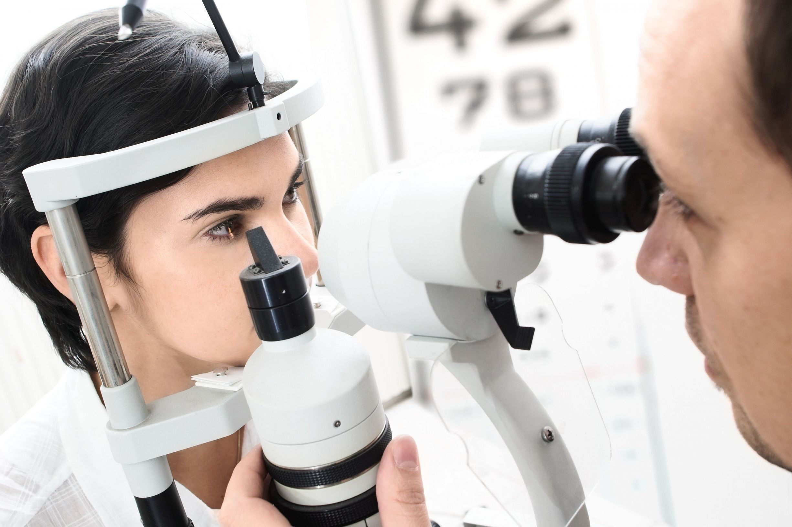

Welcome to EyeFit Vision Center of Annapolis
Welcome to EyeFit Vision Centers of Annapolis. With 11 locations throughout Maryland, our focus is on you. We offer comprehensive eye care for adults, seniors and children, as well as a full array of optical products to suit every style, personality and budget, all under one roof. We get to know your lifestyle, preferences and overall health so that we can tailor every component of our eye care services, from annual eye examinations to sunglasses, eyeglasses, and contact lenses. We take pride in our commitment to attentive and top quality optical care and patient satisfaction for all ages.
At EyeFit, we provide specialized medical care that you won’t find at most eye centers. Because your eyes are the windows to your overall health, we take a thorough approach to your eye exam and eyewear selection process. Our doctors practice at the highest level of licensure, which includes providing comprehensive eye exams, prescribing medication for eye problems and even suggesting vitamins to keep your eyes healthy.
Eye Exams
One of the most important services that we offer to our patients are comprehensive eye exams. In order to thoroughly check your eye health, our eye examinations also check for any possible complications to your eyes' health. It is recommended that people of all ages have their eyes examined about once a year or so. If you have an eye condition, are at risk for developing one, or if you have diabetes, then you should make sure to schedule even more frequent visits.
Everyone should begin seeing the family optometrist from about the time that they are six months of age. Even though a baby’s eyes are checked upon exiting the birth canal, many things can happen as a child is growing and developing. If an eye condition is caught early on, the child could be saved from a lifetime of vision impairment. For infants and babies, our doctors can care for your child's eyes early on. InfantSEE®, a public health program managed by the American Optometric Association’s foundation, Optometry Cares®, is designed to ensure that eye and vision care becomes an essential part of infant wellness care to improve a child's quality of life.
Under this program, EyeFit’s participating optometrists will provide a comprehensive infant eye assessment between 6 and 12 months of age at no cost. But eye exams are beneficial as you get older too. With frequent visits to our doctors, you can monitor your eye and vision health.
Eyeglasses and Frames
If you are looking to replace your current pair of eyeglasses or contacts, we understand that you may weigh many factors in your decision -- lifestyle, comfort, convenience, budget, and aesthetics all factor into your decision-making process. Our Annapolis vision center will gladly help you make that distinction.
Our staff of experienced eyewear professionals and opticians take the time to discuss how different selections can impact your vision, answer any questions you might have, and supply you with the most up-to-date information in order to keep your eyes healthy.
We offer an extensive selection of specialized eyewear, including sunglasses, photochromic lenses, protective eyewear, polarized lenses and anti-reflective lenses. There is a long list of designer brands to choose from, including Kate Spade®, Gucci® and Ted Baker®. Today, contact lenses are very popular because of their versatility, their availability in various forms, and the fact that they cater to a wide range of patients’ needs and special interests.
Here at EyeFit, we make sure that finding the contact lenses you need is as easy and convenient as it can be. We offer a wide selection of brands to choose from, from Acuvue and Air Optix to Biofinity, Proclear and Soflens. Whether you are looking for a new pair of contact lenses for medical reasons or aesthetic reasons, you will be sure to find the right pair at our vision center.
Meet the Doctor
Dr. Deborah Amoroso, O.D.
Having such a positive contact lens appointment opened Dr. Amoroso’s eyes to a career in optometry.
“Improving someone’s quality of life through their vision is a really great feeling,” says Dr. Amoroso. “Seeing a patient happy after they have an exam is my favorite part of the job.”
Dr. Amoroso graduated Magna Cum Laude from Cedar Crest College in Allentown, Pennsylvania before going on to the Ohio State College of Optometry. After school, she went on to work as a primary eye care doctor in Maine, South Carolina and Georgia before joining the EyeFit team.
Patients love seeing Dr. Amoroso and have often said it’s the best exam they’ve ever had. They are so grateful for the extra time that she spends improving their overall eye health.
In addition to her over eleven years of experience as a primary eye care doctor, Dr. Amoroso specializes in behavioral optometry, vision therapy and managing ocular diseases. When she’s not working she enjoys Pilates, biking and golf.
Our Location
 2321 Forest Dr
2321 Forest Dr
Annapolis, MD 21401
410.609.6353
Office Hours
Monday: 9:00AM - 8:00PM
Tuesday: 9:00AM - 8:00PM
Wednesday: 9:00AM - 8:00PM
Thursday: 9:00AM - 8:00PM
Friday: 9:00AM - 5:00PM
Saturday: 8:00AM - 4:00PM